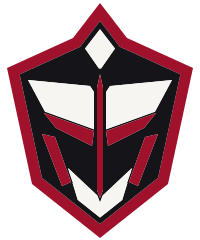
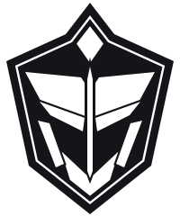
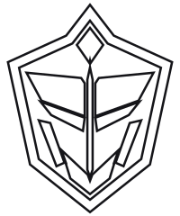
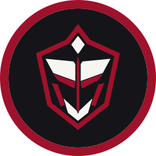
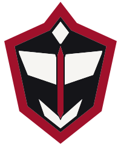
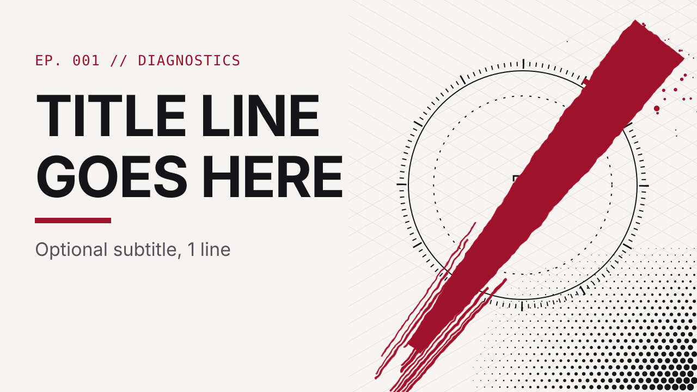
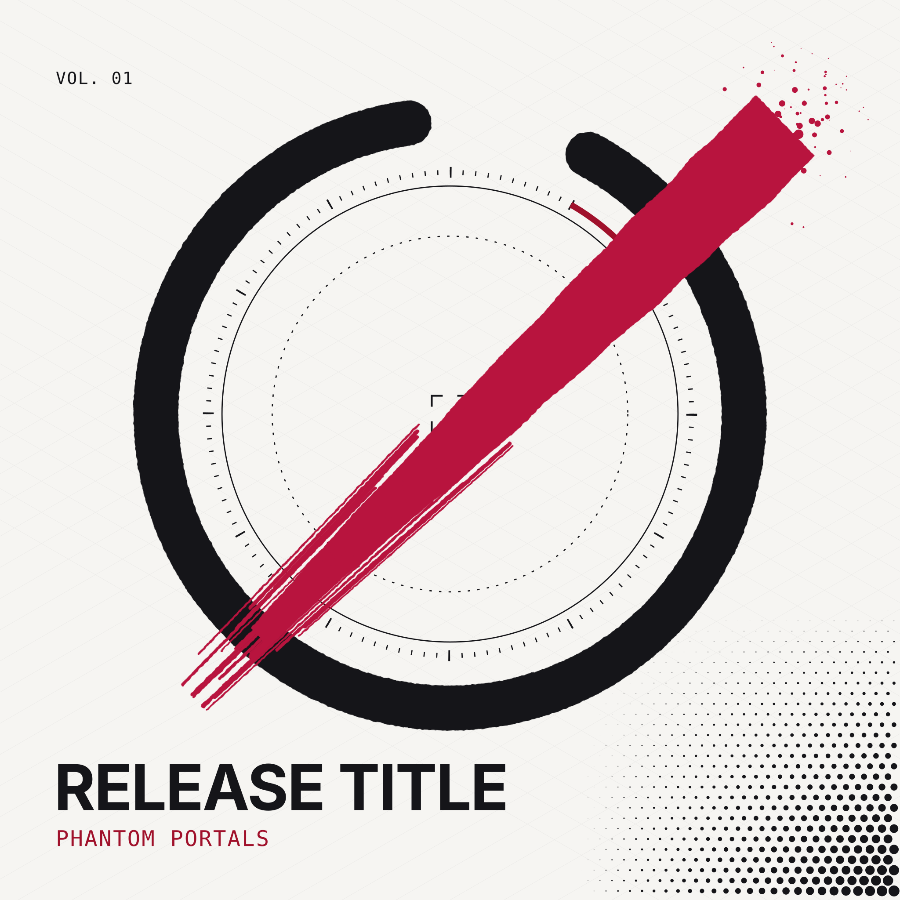
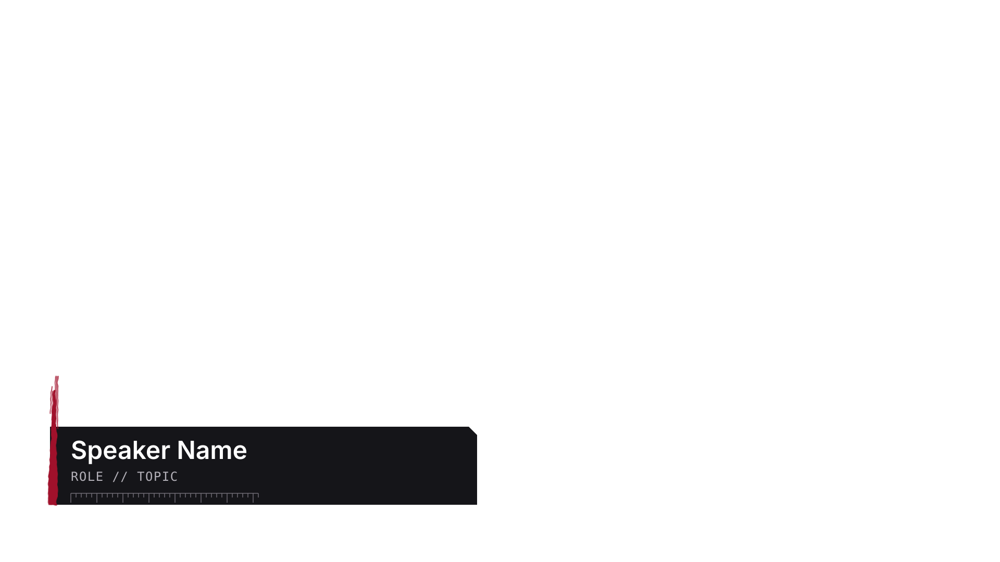
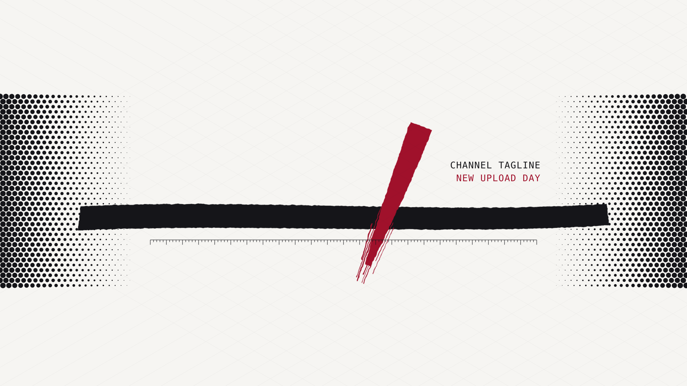

Offline-first IT command center
Polka
Portals
Design system · White / Crimson / Black · Trash Polka × isometric HUD
Design system · White / Crimson / Black · Trash Polka × isometric HUD









